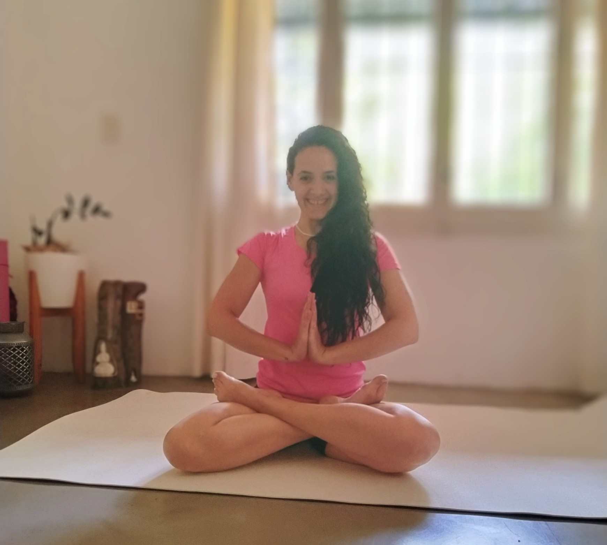

Suri Yoga nace para crear espacios cuidados para la infancia y la adolescencia. Un shala donde el cuerpo puede moverse, jugar y expresarse, y donde las emociones encuentran lenguaje.
Desde el yoga y el mindfulness, con mirada psicológica, acompañamos a niños, niñas y adolescentes, a desarrollar atención, calma y vínculo consigo mismos.
Porque un niño que se escucha hoy, es un adulto más libre mañana.
Suri es sol, es consciencia, es energía vital ☀
Conocenos, conocete.
Los niños y adolescentes hoy están creciendo en un entorno hiperestimulado e hiperconectados. No por falta de límites, sino por exceso de estímulos: pantallas, notificaciones, exigencias y poco espacio para la pausa, que impactan en la autorregulación emocional, los procesos atencionales y el descanso.
Cuando el cuerpo y la presencia consciente no tienen lugar, la atención se fragmenta y las emociones desbordan. Suri Yoga propone crear espacios donde el cuerpo vuelva a ser habitado.
No se trata de prohibir pantallas, sino de ofrecer experiencias donde el cuerpo vuelva a ser referencia. En Suri Yoga los niños encuentran un tiempo sin dispositivos, donde pueden moverse, respirar, jugar y aprender a escucharse.
Estamos cultivando con cuidado la primera germinación de nuestra semilla, un espacio todavía en construcción, de encuentro para bebés y sus cuidadores. Momentos de compañía y construcción de un vínculo marcado por la calma y la presencia plena.
Déjanos tu contacto y te avisaremos cuando la primera semilla empiece a germinar 🌱✨
ContactarYoga y Mindfulness infantil • Habitar el cuerpo desde el juego.
Talleres semanales de yoga y mindfulness infantil, para regular emociones y habitar el cuerpo. Suri Yoga es un espacio cuidado para que niños y niñas desarrollen consciencia corporal, regulación emocional y atención plena.
Si sentís que este espacio puede acompañar a tu hijo/a, avisame y reservamos lugar 🌱
Consulta horarios y disponibilidad de cupos
Yoga y Mindfulness infantil • Habitar el cuerpo, conectar con la respiración y el valor de la presencia.
Cuando todo acelera, habitar el cuerpo y conectar con la pausa, es resistencia. Espacios semanales para adolescentes, una pausa para bajar la intensidad, respirar, recuperar el foco y escuchar el cuerpo.
Consulta horarios y disponibilidad de cupos
ContactarProgramas de regulación corporal y emocional en contextos educativos. Enseñar pausa y presencia, también es educar.
Contribuí con el bienestar de tu comunidad, no dudes en contactarnos
Contactar
Soy Candela, psicóloga y docente. Hace más de 15 años acompaño a niños y adolescentes en sus procesos emocionales. En Suri Yoga integro mi formación clínica con el yoga y el mindfulness infantil, creando un espacio donde el cuerpo pueda expresarse y la mente re-encontrarse con la calma interior.
Después de tantos años enseñando tecnología, comprendí que el mayor aprendizaje hoy es volver al cuerpo.
Cuando el cuerpo tiene lugar, la atención vuelve a aparecer. Cuando hay presencia real, el reencuentro con la calma interior se vuelve posible.